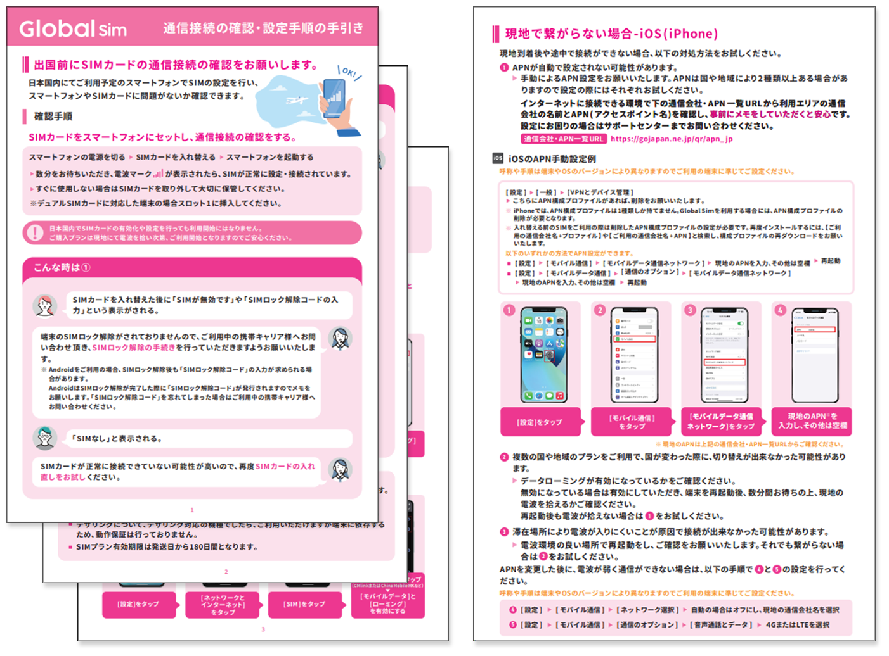

担当商品の売上が伸び悩んでいたため、カスタマーサクセスや販売部門へヒアリングを実施。その結果、「初期設定が難しいため問い合わせが多く、設定できずにクレームや返品に至る」という直接的な売上低下の要因（ボトルネック）を特定しました
専門知識がなくても直感的に理解できるよう、実際の画面キャプチャやイラストを豊富に用いた「ビジュアル初期設定ガイド」を自ら企画・制作して商品に同梱。さらに、その丁寧な手順書があることを商品販売ページでも大々的にアピールし、購入前の不安を払拭しました。

実際のビジュアル初期設定ガイド
初期設定に関する問い合わせが激減し、返品リスクを最小化。外部パートナーとも緊密に連携しながら、それまで月商50万〜100万円未満だった店舗の最高月商を約5.5倍（約276万円）へ成長させ、その後も安定して売り上げる主要チャネルへ成長させました。